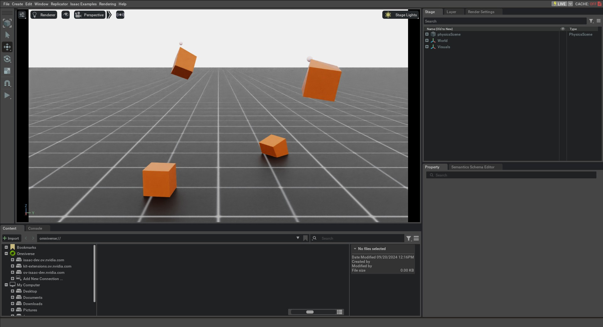

Deformable Object 可以泛指布料、流体和 Soft Body；在 PhysX 的术语中，本教程讨论的 Deformable Object 特指 Soft Body。与 Rigid Object 不同，Soft Body 会在外力和 Collision 作用下发生形变。
PhysX 使用有限元方法（FEM）模拟 Soft Body。一个 Soft Body 包含用于计算形变的 Simulation Mesh，以及用于检测碰撞的 Collision Mesh。有关实现细节，请参阅 PhysX 文档。
本教程将在 Scene 中生成多个软立方体，演示如何设置其节点位置和速度，以及如何向 Mesh 节点施加运动学 Command 来控制形变。
1 代码
本教程对应 run_deformable_object.py，位于 scripts/tutorials/01_assets 目录。
代码 run_deformable_object.py
# Copyright (c) 2022-2026, The Isaac Lab Project Developers (https://github.com/isaac-sim/IsaacLab/blob/main/CONTRIBUTORS.md).
# All rights reserved.
#
# SPDX-License-Identifier: BSD-3-Clause
"""
This script demonstrates how to work with the deformable object and interact with it.
.. code-block:: bash
# Usage
./isaaclab.sh -p scripts/tutorials/01_assets/run_deformable_object.py
"""
"""Launch Isaac Sim Simulator first."""
import argparse
from isaaclab.app import AppLauncher
# add argparse arguments
parser = argparse.ArgumentParser(description="Tutorial on interacting with a deformable object.")
# append AppLauncher cli args
AppLauncher.add_app_launcher_args(parser)
# parse the arguments
args_cli = parser.parse_args()
# launch omniverse app
app_launcher = AppLauncher(args_cli)
simulation_app = app_launcher.app
"""Rest everything follows."""
import torch
import isaaclab.sim as sim_utils
import isaaclab.utils.math as math_utils
from isaaclab.assets import DeformableObject, DeformableObjectCfg
from isaaclab.sim import SimulationContext
def design_scene():
"""Designs the scene."""
# Ground-plane
cfg = sim_utils.GroundPlaneCfg()
cfg.func("/World/defaultGroundPlane", cfg)
# Lights
cfg = sim_utils.DomeLightCfg(intensity=2000.0, color=(0.8, 0.8, 0.8))
cfg.func("/World/Light", cfg)
# Create separate groups called "Origin1", "Origin2", "Origin3"
# Each group will have a robot in it
origins = [[0.25, 0.25, 0.0], [-0.25, 0.25, 0.0], [0.25, -0.25, 0.0], [-0.25, -0.25, 0.0]]
for i, origin in enumerate(origins):
sim_utils.create_prim(f"/World/Origin{i}", "Xform", translation=origin)
# Deformable Object
cfg = DeformableObjectCfg(
prim_path="/World/Origin.*/Cube",
spawn=sim_utils.MeshCuboidCfg(
size=(0.2, 0.2, 0.2),
deformable_props=sim_utils.DeformableBodyPropertiesCfg(rest_offset=0.0, contact_offset=0.001),
visual_material=sim_utils.PreviewSurfaceCfg(diffuse_color=(0.5, 0.1, 0.0)),
physics_material=sim_utils.DeformableBodyMaterialCfg(poissons_ratio=0.4, youngs_modulus=1e5),
),
init_state=DeformableObjectCfg.InitialStateCfg(pos=(0.0, 0.0, 1.0)),
debug_vis=True,
)
cube_object = DeformableObject(cfg=cfg)
# return the scene information
scene_entities = {"cube_object": cube_object}
return scene_entities, origins
def run_simulator(sim: sim_utils.SimulationContext, entities: dict[str, DeformableObject], origins: torch.Tensor):
"""Runs the simulation loop."""
# Extract scene entities
# note: we only do this here for readability. In general, it is better to access the entities directly from
# the dictionary. This dictionary is replaced by the InteractiveScene class in the next tutorial.
cube_object = entities["cube_object"]
# Define simulation stepping
sim_dt = sim.get_physics_dt()
sim_time = 0.0
count = 0
# Nodal kinematic targets of the deformable bodies
nodal_kinematic_target = cube_object.data.nodal_kinematic_target.clone()
# Simulate physics
while simulation_app.is_running():
# reset
if count % 250 == 0:
# reset counters
sim_time = 0.0
count = 0
# reset the nodal state of the object
nodal_state = cube_object.data.default_nodal_state_w.clone()
# apply random pose to the object
pos_w = torch.rand(cube_object.num_instances, 3, device=sim.device) * 0.1 + origins
quat_w = math_utils.random_orientation(cube_object.num_instances, device=sim.device)
nodal_state[..., :3] = cube_object.transform_nodal_pos(nodal_state[..., :3], pos_w, quat_w)
# write nodal state to simulation
cube_object.write_nodal_state_to_sim(nodal_state)
# Write the nodal state to the kinematic target and free all vertices
nodal_kinematic_target[..., :3] = nodal_state[..., :3]
nodal_kinematic_target[..., 3] = 1.0
cube_object.write_nodal_kinematic_target_to_sim(nodal_kinematic_target)
# reset buffers
cube_object.reset()
print("----------------------------------------")
print("[INFO]: Resetting object state...")
# update the kinematic target for cubes at index 0 and 3
# we slightly move the cube in the z-direction by picking the vertex at index 0
nodal_kinematic_target[[0, 3], 0, 2] += 0.001
# set vertex at index 0 to be kinematically constrained
# 0: constrained, 1: free
nodal_kinematic_target[[0, 3], 0, 3] = 0.0
# write kinematic target to simulation
cube_object.write_nodal_kinematic_target_to_sim(nodal_kinematic_target)
# write internal data to simulation
cube_object.write_data_to_sim()
# perform step
sim.step()
# update sim-time
sim_time += sim_dt
count += 1
# update buffers
cube_object.update(sim_dt)
# print the root position
if count % 50 == 0:
print(f"Root position (in world): {cube_object.data.root_pos_w[:, :3]}")
def main():
"""Main function."""
# Load kit helper
sim_cfg = sim_utils.SimulationCfg(device=args_cli.device)
sim = SimulationContext(sim_cfg)
# Set main camera
sim.set_camera_view(eye=[3.0, 0.0, 1.0], target=[0.0, 0.0, 0.5])
# Design scene
scene_entities, scene_origins = design_scene()
scene_origins = torch.tensor(scene_origins, device=sim.device)
# Play the simulator
sim.reset()
# Now we are ready!
print("[INFO]: Setup complete...")
# Run the simulator
run_simulator(sim, scene_entities, scene_origins)
if __name__ == "__main__":
# run the main function
main()
# close sim app
simulation_app.close()
2 代码解析
2.1 设计 Scene
与 Rigid Object 教程类似，Scene 中包含 Ground Plane 和 Light。此外，本例使用 assets.DeformableObject 添加 Deformable Object。该 Class 会在指定路径生成 Prim，并初始化对应的 Deformable Body Physics Handle。
本例的软立方体使用与“生成 Prim”教程相似的 Spawn Configuration，只是进一步将它包装在 assets.DeformableObjectCfg 中。该配置描述 Asset 的生成方式和默认初始状态；将其传给 assets.DeformableObject 后，会在 Simulation 开始时生成 Object 并初始化 Physics Handle。
笔记
Deformable Object 仅在 GPU Simulation 中受支持，并且需要使用以下命令生成Mesh Object 可变形体的物理特性就可以了。
与 Rigid Object 相同，将 Configuration Object 传给 assets.DeformableObject 构造函数，即可在 Scene 中生成并创建 Deformable Object 实例。
# Create separate groups called "Origin1", "Origin2", "Origin3"
# Each group will have a robot in it
origins = [[0.25, 0.25, 0.0], [-0.25, 0.25, 0.0], [0.25, -0.25, 0.0], [-0.25, -0.25, 0.0]]
for i, origin in enumerate(origins):
sim_utils.create_prim(f"/World/Origin{i}", "Xform", translation=origin)
# Deformable Object
cfg = DeformableObjectCfg(
prim_path="/World/Origin.*/Cube",
spawn=sim_utils.MeshCuboidCfg(
size=(0.2, 0.2, 0.2),
deformable_props=sim_utils.DeformableBodyPropertiesCfg(rest_offset=0.0, contact_offset=0.001),
visual_material=sim_utils.PreviewSurfaceCfg(diffuse_color=(0.5, 0.1, 0.0)),
physics_material=sim_utils.DeformableBodyMaterialCfg(poissons_ratio=0.4, youngs_modulus=1e5),
),
init_state=DeformableObjectCfg.InitialStateCfg(pos=(0.0, 0.0, 1.0)),
debug_vis=True,
)
cube_object = DeformableObject(cfg=cfg)
2.2 运行 Simulation Loop
Simulation Loop 会按固定间隔重置 Simulation、向 Deformable Object 应用运动学 Command、推进 Simulation，并更新其内部 Buffer。
2.2.1 重置 Simulation 状态
与 Rigid Body 和 Articulation 不同，Deformable Object 的状态由 Mesh 节点的 Position 和 Velocity 表示。这些值位于 Simulation World Frame，并保存在 assets.DeformableObject.data 中。
assets.DeformableObject.data.default_nodal_state_w 提供所生成 Prim 的默认节点状态。该状态可通过 assets.DeformableObjectCfg.init_state 配置；本教程沿用默认值。
注意
Configuration中的初始状态 assets.DeformableObjectCfg 指定 Pose
生成时的 Deformable Object。基于这个初始状态，默认的Node状态是
第一次播放Simulation时获取。
代码对节点 Position 应用随机 Transform，从而随机化 Deformable Object 的初始状态。
# reset the nodal state of the object
nodal_state = cube_object.data.default_nodal_state_w.clone()
# apply random pose to the object
pos_w = torch.rand(cube_object.num_instances, 3, device=sim.device) * 0.1 + origins
quat_w = math_utils.random_orientation(cube_object.num_instances, device=sim.device)
nodal_state[..., :3] = cube_object.transform_nodal_pos(nodal_state[..., :3], pos_w, quat_w)
重置时，先调用 assets.DeformableObject.write_nodal_state_to_sim() 将节点状态写入 Simulation Buffer，再调用 assets.DeformableObject.write_nodal_kinematic_target_to_sim() 清除上一轮 Simulation 中的运动学目标。下一节将说明运动学目标的作用。
最后调用 assets.DeformableObject.reset() 清空内部 Buffer 和缓存。
# write nodal state to simulation
cube_object.write_nodal_state_to_sim(nodal_state)
# Write the nodal state to the kinematic target and free all vertices
nodal_kinematic_target[..., :3] = nodal_state[..., :3]
nodal_kinematic_target[..., 3] = 1.0
cube_object.write_nodal_kinematic_target_to_sim(nodal_kinematic_target)
# reset buffers
cube_object.reset()
2.2.2 步进 Simulation
Deformable Body 支持部分运动学控制：用户可以为部分 Mesh 节点指定 Position 目标，其余节点仍由 FEM Solver 模拟。这适合以可控方式操作 Deformable Object 的场景。
本教程对四个立方体中的两个应用运动学 Command：设置索引为 0 的左下角节点，使其目标位置沿 z 轴移动。
每个 Step 都会小幅增加该节点的运动学 Position 目标，并设置 Flag，表明该值是节点在 Simulation Buffer 中的运动学目标。随后调用 assets.DeformableObject.write_nodal_kinematic_target_to_sim() 写入目标。
# update the kinematic target for cubes at index 0 and 3
# we slightly move the cube in the z-direction by picking the vertex at index 0
nodal_kinematic_target[[0, 3], 0, 2] += 0.001
# set vertex at index 0 to be kinematically constrained
# 0: constrained, 1: free
nodal_kinematic_target[[0, 3], 0, 3] = 0.0
# write kinematic target to simulation
cube_object.write_nodal_kinematic_target_to_sim(nodal_kinematic_target)
与 Rigid Object 和 Articulation 类似，推进 Simulation 前会调用 assets.DeformableObject.write_data_to_sim()。目前该 Method 不会向 Deformable Object 施加外力，但为了保持流程完整并便于后续扩展，示例仍保留此调用。
# write internal data to simulation
cube_object.write_data_to_sim()
2.2.3 更新状态
每次推进 Simulation 后，调用 assets.DeformableObject.update() 更新内部 Buffer，使 assets.DeformableObject.data 反映最新状态。
示例按固定间隔在 Terminal 输出 Deformable Object 的 Root Position。Deformable Object 本身没有根状态，因此这里将全部 Mesh 节点 Position 的平均值视为 Root Position。
# update buffers
cube_object.update(sim_dt)
# print the root position
if count % 50 == 0:
print(f"Root position (in world): {cube_object.data.root_pos_w[:, :3]}")
3 代码执行
代码完成后，执行以下 Command 查看结果：
./isaaclab.sh -p scripts/tutorials/01_assets/run_deformable_object.py
窗口中会显示 Ground Plane、Light 和四个绿色软立方体。其中两个从高处落到地面，另外两个沿 z 轴移动；Marker 会显示左下角节点的运动学目标 Position。关闭窗口或在 Terminal 中按 Ctrl+C 可停止 Simulation。

本教程演示了如何生成 Deformable Object，用 DeformableObject Class 初始化其 Physics Handle，读写 Object 状态，并通过运动学 Command 控制 Mesh 节点。下一教程将使用 InteractiveScene Class 创建 Scene。